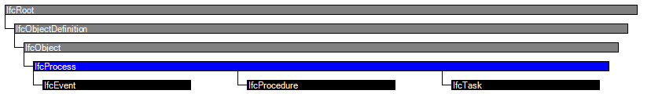

Natural language names
 | Prozess (allgemein) |
 | Process |
 | Processus |
| Prozess (allgemein) |
| Process |
| Processus |
IfcProcess is defined as one individual activity or event, that is ordered in time, that has sequence relationships with other processes, which transforms input in output, and may connect to other other processes through input output relationships. An IfcProcess can be an activity (or task), or an event. It takes usually place in building construction with the intent of designing, costing, acquiring, constructing, or maintaining products or other and similar tasks or procedures. Figure 118 illustrates process relationships.
NOTE Definition according to ISO9000:
A process is a set of activities that are interrelated or that interact with one another. Processes use resources to transform inputs into outputs. Processes are interconnected because the output from one process becomes the input for another process. In effect, processes are "glued" together by means of such input output relationships.
|
Figure 118 — Process relationships and the ICON process diagram. |
Process information relates to other objects by establishing the following relationships:
HISTORY New entity in IFC1.0.
IFC2x CHANGE The attribute Productivity has been removed.
IFC4 CHANGE The attribute Identification has been promoted from subtypes IfcTask and others.
| # | Attribute | Type | Cardinality | Description | C |
|---|---|---|---|---|---|
| 6 | Identification | IfcIdentifier | [0:1] | An identifying designation given to a process or activity. It is the identifier at the occurrence level. | X |
| 7 | LongDescription | IfcText | [0:1] | An extended description or narrative that may be provided. | X |
| IsPredecessorTo | IfcRelSequence @RelatingProcess | S[0:?] | Dependency between two activities, it refers to the subsequent activity for which this activity is the predecessor. The link between two activities can include a link type and a lag time. | X | |
| IsSuccessorFrom | IfcRelSequence @RelatedProcess | S[0:?] | Dependency between two activities, it refers to the previous activity for which this activity is the successor. The link between two activities can include a link type and a lag time. | X | |
| OperatesOn | IfcRelAssignsToProcess @RelatingProcess | S[0:?] | Set of relationships to other objects, e.g. products, processes, controls, resources or actors, that are operated on by the process. | X |

| # | Attribute | Type | Cardinality | Description | C |
|---|---|---|---|---|---|
| IfcRoot | |||||
| 1 | GlobalId | IfcGloballyUniqueId | [1:1] | Assignment of a globally unique identifier within the entire software world. | X |
| 2 | OwnerHistory | IfcOwnerHistory | [0:1] |
Assignment of the information about the current ownership of that object, including owning actor, application, local identification and information captured about the recent changes of the object,
NOTE only the last modification in stored - either as addition, deletion or modification. | X |
| 3 | Name | IfcLabel | [0:1] | Optional name for use by the participating software systems or users. For some subtypes of IfcRoot the insertion of the Name attribute may be required. This would be enforced by a where rule. | X |
| 4 | Description | IfcText | [0:1] | Optional description, provided for exchanging informative comments. | X |
| IfcObjectDefinition | |||||
| HasAssignments | IfcRelAssigns @RelatedObjects | S[0:?] | Reference to the relationship objects, that assign (by an association relationship) other subtypes of IfcObject to this object instance. Examples are the association to products, processes, controls, resources or groups. | X | |
| Nests | IfcRelNests @RelatedObjects | S[0:1] | References to the decomposition relationship being a nesting. It determines that this object definition is a part within an ordered whole/part decomposition relationship. An object occurrence or type can only be part of a single decomposition (to allow hierarchical strutures only). | X | |
| IsNestedBy | IfcRelNests @RelatingObject | S[0:?] | References to the decomposition relationship being a nesting. It determines that this object definition is the whole within an ordered whole/part decomposition relationship. An object or object type can be nested by several other objects (occurrences or types). | X | |
| HasContext | IfcRelDeclares @RelatedDefinitions | S[0:1] | References to the context providing context information such as project unit or representation context. It should only be asserted for the uppermost non-spatial object. | X | |
| IsDecomposedBy | IfcRelAggregates @RelatingObject | S[0:?] | References to the decomposition relationship being an aggregation. It determines that this object definition is whole within an unordered whole/part decomposition relationship. An object definitions can be aggregated by several other objects (occurrences or parts). | X | |
| Decomposes | IfcRelAggregates @RelatedObjects | S[0:1] | References to the decomposition relationship being an aggregation. It determines that this object definition is a part within an unordered whole/part decomposition relationship. An object definitions can only be part of a single decomposition (to allow hierarchical strutures only). | X | |
| HasAssociations | IfcRelAssociates @RelatedObjects | S[0:?] | Reference to the relationship objects, that associates external references or other resource definitions to the object.. Examples are the association to library, documentation or classification. | X | |
| IfcObject | |||||
| 5 | ObjectType | IfcLabel | [0:1] |
The type denotes a particular type that indicates the object further. The use has to be established at the level of instantiable subtypes. In particular it holds the user defined type, if the enumeration of the attribute PredefinedType is set to USERDEFINED.
| X |
| IsDeclaredBy | IfcRelDefinesByObject @RelatedObjects | S[0:1] | Link to the relationship object pointing to the declaring object that provides the object definitions for this object occurrence. The declaring object has to be part of an object type decomposition. The associated IfcObject, or its subtypes, contains the specific information (as part of a type, or style, definition), that is common to all reflected instances of the declaring IfcObject, or its subtypes. | X | |
| Declares | IfcRelDefinesByObject @RelatingObject | S[0:?] | Link to the relationship object pointing to the reflected object(s) that receives the object definitions. The reflected object has to be part of an object occurrence decomposition. The associated IfcObject, or its subtypes, provides the specific information (as part of a type, or style, definition), that is common to all reflected instances of the declaring IfcObject, or its subtypes. | X | |
| IsTypedBy | IfcRelDefinesByType @RelatedObjects | S[0:1] | Set of relationships to the object type that provides the type definitions for this object occurrence. The then associated IfcTypeObject, or its subtypes, contains the specific information (or type, or style), that is common to all instances of IfcObject, or its subtypes, referring to the same type. | X | |
| IsDefinedBy | IfcRelDefinesByProperties @RelatedObjects | S[0:?] | Set of relationships to property set definitions attached to this object. Those statically or dynamically defined properties contain alphanumeric information content that further defines the object. | X | |
| IfcProcess | |||||
| 6 | Identification | IfcIdentifier | [0:1] | An identifying designation given to a process or activity. It is the identifier at the occurrence level. | X |
| 7 | LongDescription | IfcText | [0:1] | An extended description or narrative that may be provided. | X |
| IsPredecessorTo | IfcRelSequence @RelatingProcess | S[0:?] | Dependency between two activities, it refers to the subsequent activity for which this activity is the predecessor. The link between two activities can include a link type and a lag time. | X | |
| IsSuccessorFrom | IfcRelSequence @RelatedProcess | S[0:?] | Dependency between two activities, it refers to the previous activity for which this activity is the successor. The link between two activities can include a link type and a lag time. | X | |
| OperatesOn | IfcRelAssignsToProcess @RelatingProcess | S[0:?] | Set of relationships to other objects, e.g. products, processes, controls, resources or actors, that are operated on by the process. | X | |
Property Sets for Objects
The Property Sets for Objects concept applies to this entity as shown in Table 3.
| ||||||||||||||||||||||||||||||||||||
Table 3 — IfcProcess Property Sets for Objects |
| # | Concept | Model View |
|---|---|---|
| IfcRoot | ||
| Software Identity | Common Use Definitions | |
| Revision Control | Common Use Definitions | |
| IfcObject | ||
| Object Occurrence Predefined Type | Common Use Definitions | |
| IfcProcess | ||
| Property Sets for Objects | Common Use Definitions | |
<xs:element name="IfcProcess" type="ifc:IfcProcess" abstract="true" substitutionGroup="ifc:IfcObject" nillable="true"/>
<xs:complexType name="IfcProcess" abstract="true">
<xs:complexContent>
<xs:extension base="ifc:IfcObject">
<xs:attribute name="Identification" type="ifc:IfcIdentifier" use="optional"/>
<xs:attribute name="LongDescription" type="ifc:IfcText" use="optional"/>
</xs:extension>
</xs:complexContent>
</xs:complexType>
ENTITY IfcProcess
ABSTRACT SUPERTYPE OF(ONEOF(IfcEvent, IfcProcedure, IfcTask))
SUBTYPE OF (IfcObject);
Identification : OPTIONAL IfcIdentifier;
LongDescription : OPTIONAL IfcText;
INVERSE
IsPredecessorTo : SET OF IfcRelSequence FOR RelatingProcess;
IsSuccessorFrom : SET OF IfcRelSequence FOR RelatedProcess;
OperatesOn : SET OF IfcRelAssignsToProcess FOR RelatingProcess;
END_ENTITY;
 Instance diagram
Instance diagram Link to this page
Link to this page